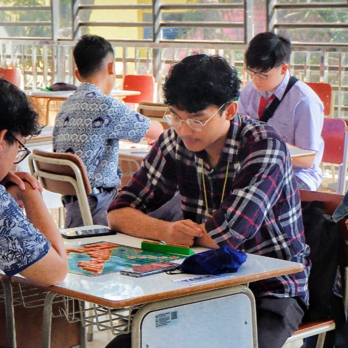

Halo, saya Arza 👋
Saya mahasiswa Teknik Informatika Universitas Lampung dengan minat pada Sistem Komputer, Rekayasa Perangkat Lunak, dan Teknologi Informasi. Aktif di organisasi kampus serta terbiasa mengeksplorasi tren teknologi terbaru seperti AI, IoT, dan Cloud Computing. Website ini adalah portofolio pribadi sekaligus kumpulan materi kuliah Kapita Selekta hingga topik Open Source Philosophy.